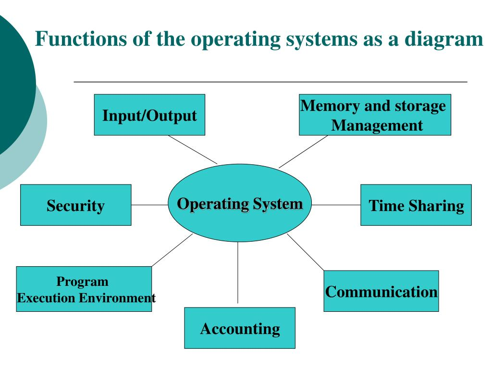
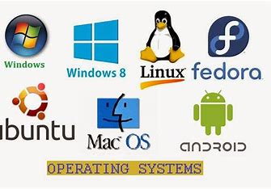
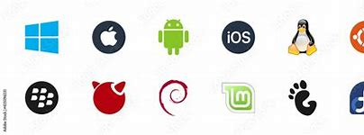
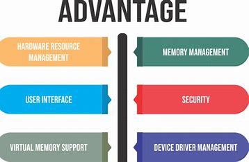

Functions of an Operating System
The operating system (OS) acts as an intermediary between users and hardware, ensuring efficient operation. Key functions include:
- Process Management: Allocates CPU resources and manages multitasking.
- Memory Management: Monitors and allocates system memory for processes.
- File System Management: Organizes and provides access to files and directories.
- Device Management: Interfaces with hardware using device drivers.
- User Interface: Offers a graphical or command-line interface for interaction.
Types of Operating Systems
Operating systems are designed for different use cases. Key types include:
- Batch OS: Executes jobs in batches without user interaction.
- Time-Sharing OS: Allows multiple users to interact simultaneously.
- Distributed OS: Manages multiple computers as a single system.
- Real-Time OS: Performs tasks within strict time constraints.
- Mobile OS: Designed for smartphones and tablets, such as Android and iOS.
Popular Operating Systems
There are several widely used operating systems, including:
- Windows: User-friendly with extensive software compatibility.
- Linux: Open-source, secure, and flexible for servers and developers.
- macOS: Sleek design and seamless integration with Apple hardware.
- Android: Customizable and widely used in mobile devices.
- iOS: Known for simplicity and security on Apple devices.
Importance of an Operating System
Operating systems play a crucial role in modern computing by:
- Simplifying interaction between users and hardware.
- Ensuring efficient resource utilization.
- Providing a secure environment for applications and data.
- Enabling the execution of various software programs.